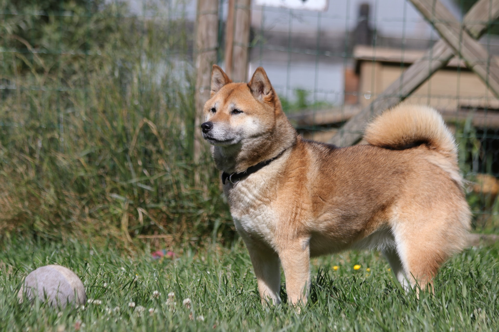
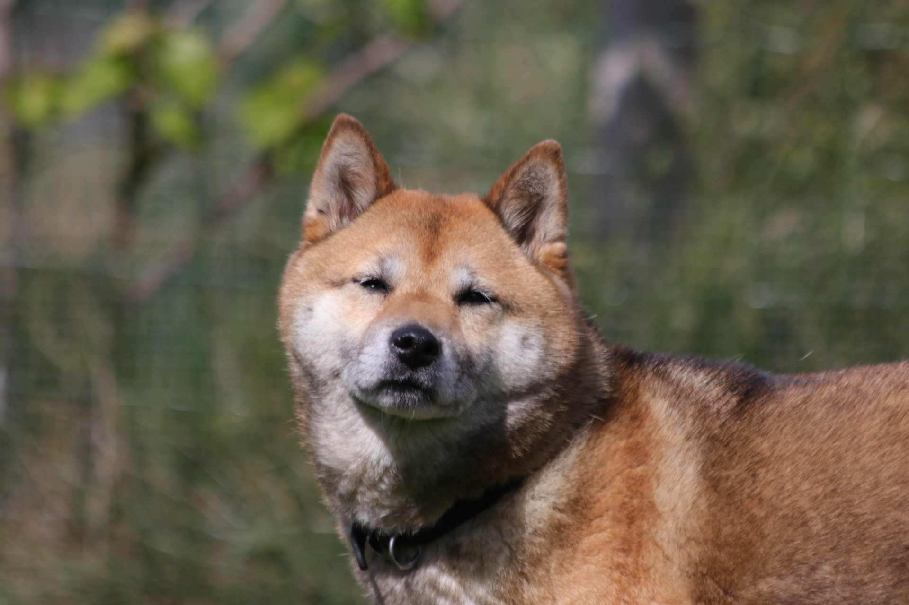

Miko is een Shiba dame geboren op 30 december 2016
Miko heeft bij ons reeds succesvol 1 patella ingreep ondergaan. (30 april 2023)
Ook haar andere poot zal in de nabije toekomst nog een operatie nodig hebben.
Na genezing en revalidatie, van deze toekomstige ingreep, is adoptie bespreekbaar.
Mensen met interesse in Miko mogen intussen natuurlijk steeds mailen.
Miko is een prachtige, zelfstandige Shiba dame die graag voldoende rust heeft op dagbasis.
Bubble space respecterende baasjes is een must.
Net zoals duidelijk zijn in je omgang met haar.
Miko is gevoelig rond eten en zal snel items of kamers voor zichzelf claimen.
Hier juist mee omgaan is een must omdat Miko anders durft aanvallen en bijten.
Onze raad opvolgen/cursus volgen hoe hiermee om te gaan is een must.
We zullen een doorverwijzing geven naar betrouwbare begeleiding.
Als je juist met Miko omgaat heb je een heel fijn Shiba maatje aan je zijde.
Dan heb je ook de nodige speel en knuffel sessies in de tuin.
Ligt Miko ergens neer, laat haar dan genieten zonder lastig te vallen.
Miko zelf naar jou toe laten komen en signalen goed lezen is een must.
Miko zoekt een rustige thuis als enig huisdier, zonder drukte van (toekomstige) kinderen.
Miko had bij de oud eigenaar reeds een patella operatie gehad.
Hiervan gaven de pinnen problemen + was de patella weer verschoven.
Daarom is deze poot als eerste door de specialisten geholpen.
Miko haar gestel is momenteel niet geschikt voor verre wandelingen.
Na beide ingrepen zal dit hoogstwaarschijnlijk beteren. (net als haar humeur ivm pijn)
Natuurlijk is een uitstap doorheen natuurgebied altijd leuk, dus die mogen niet ontbreken.
Sowieso is een Shiba proof tuin ook een must.
Miko is een echte levensgenieter en hangt meer aan haar familie dan ze laat uitschijnen.
Wil je graag meer weten over Miko?
Mail dan naar shibarescuevzw@gmail.com

|